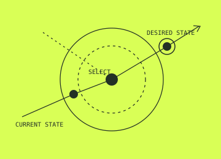
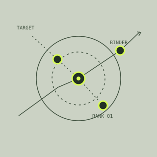

01
BindFM
Molecular interaction intelligence for finding the forces that make binding work.
terminalBio builds world models that turn biological complexity into interventions you can design, test, and learn from.
Explore the platform ↓THE THESIS 01
Today’s models can recognize patterns in sequence or structure. The next frontier is understanding how molecular events propagate through cells, tissues, and patients—and using that understanding to make better choices.
We’re building the computational layer for that work.
THE PLATFORM 02
A closed loop between computation and experiment.
A continuously learning representation of biological state, response, and uncertainty. It connects evidence across scales so every intervention starts with a better hypothesis.
Explore the system →Integrate multimodal evidence—from molecular assays to longitudinal clinical signals—into a coherent starting state.
THE SYSTEMS 03
Specialized models, one shared intelligence layer.
Molecular interaction intelligence for finding the forces that make binding work.
Generative aptamer design with a direct line from sequence to experimental validation.
RNA structure intelligence for a more legible, designable RNA landscape.
Composable infrastructure to run, compare, and build on biological models.
INTERVENTION ENGINE
Search the intervention space, simulate consequences, and prioritize the designs that move a biological system toward a desired state.

EXPERIMENT ENGINE
Design experiments for information gain—not just throughput. Every assay is selected to sharpen the world model.
WHERE IT APPLIES 04
Generate, rank, and validate new binders against difficult targets.

Anticipate escape paths before they arrive in the clinic.
Reason over structure, delivery, and function together.
CRISPR, protein engineering, and synthetic biology with system-level feedback.
A MODEL THAT GROWS 05
COMPOUNDING ADVANTAGE 06
Our moat is not a static dataset. It is a growing feedback system: proprietary experimental readouts, high-resolution metadata, and models trained to decide what to measure next.
RESEARCH & OPEN SCIENCE 07
We publish, collaborate, and create tools that make biological intelligence more useful to the people advancing it.
TERMINALBIO 08
We are scientists, engineers, and builders working at the frontier of biological intelligence.
Meet terminalBio →START A PROGRAM